See every open PR across all your repos in one place. CI status, review state, and what's actually blocking things. At a glance.
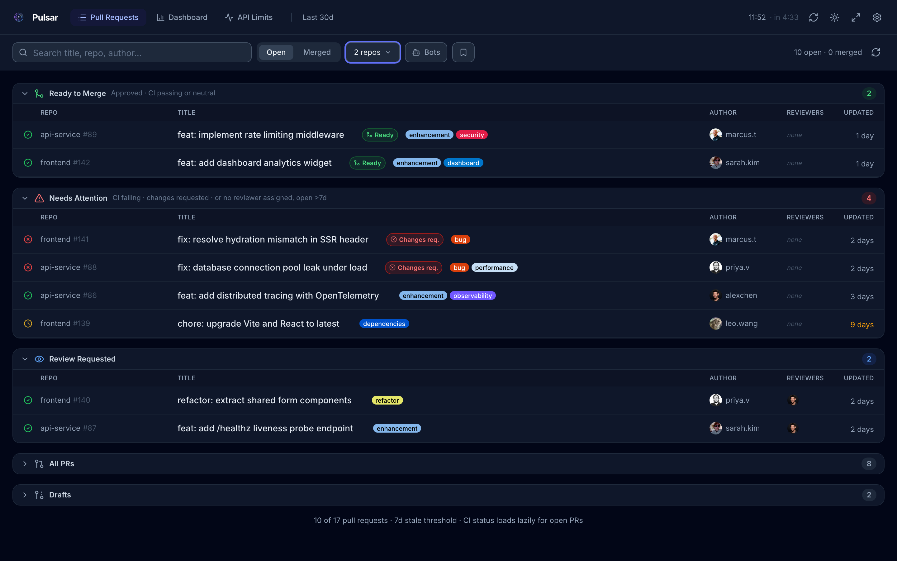
Pulsar groups your PRs by what actually needs doing. Open the app and you know where to start.
New features shipped to make your workflow even faster.
A clean, focused interface. Works in dark and light mode, on desktop and mobile.
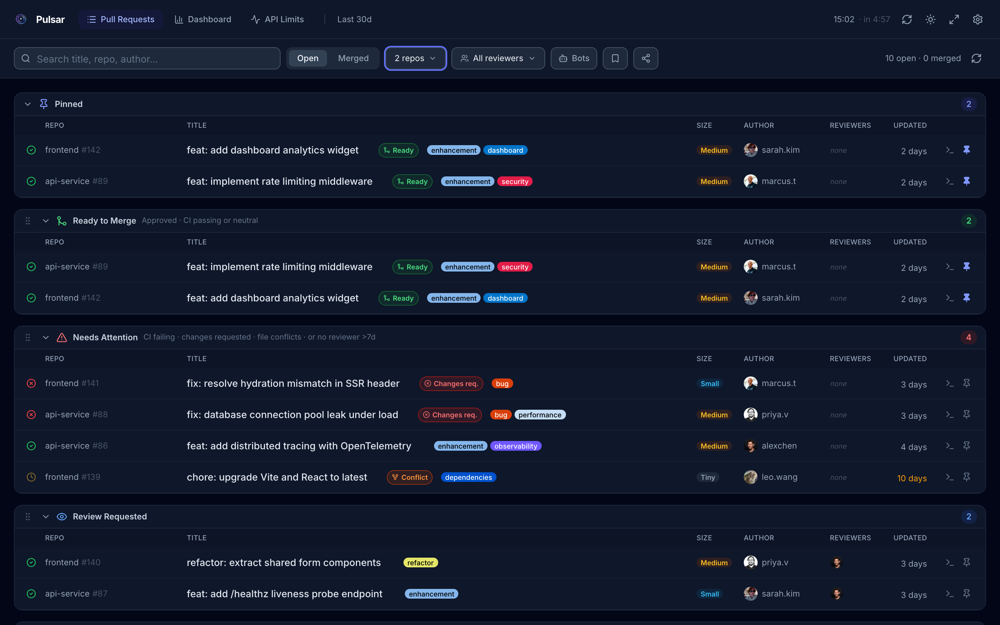
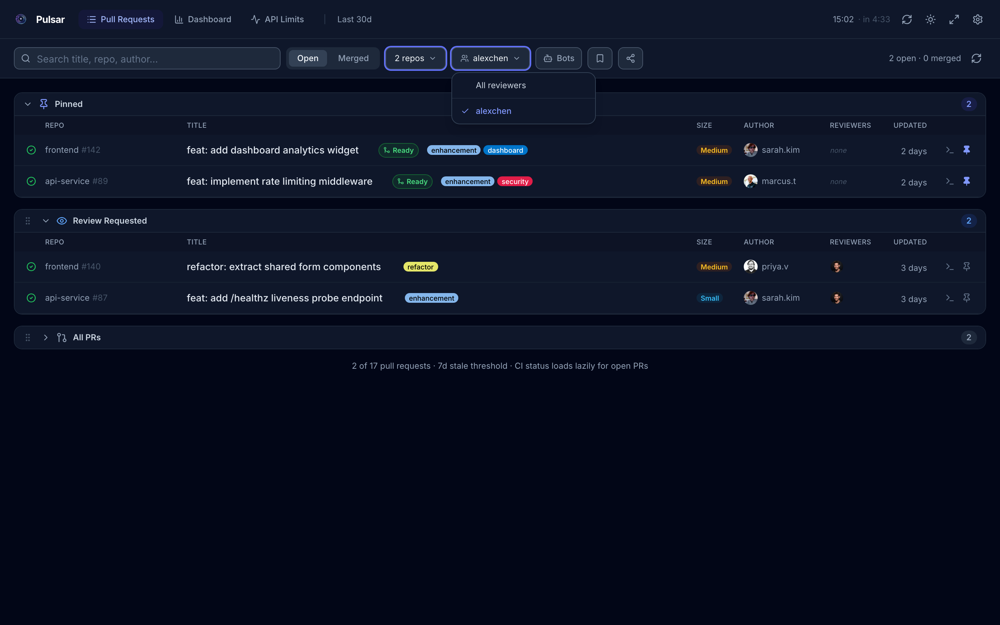
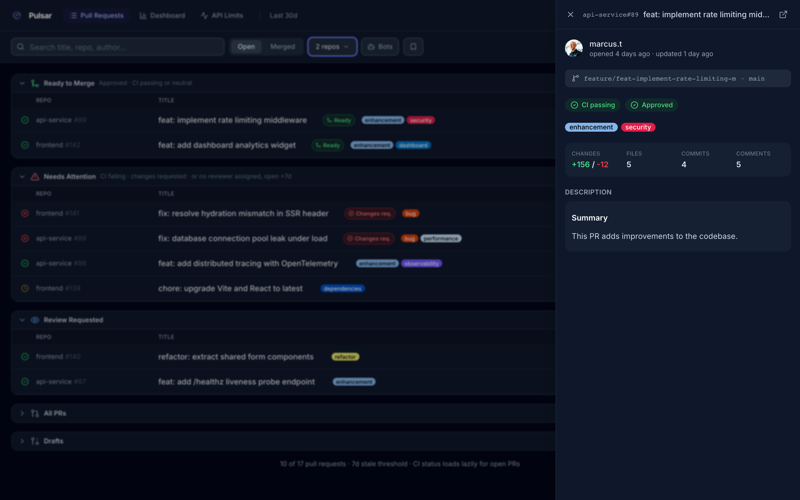
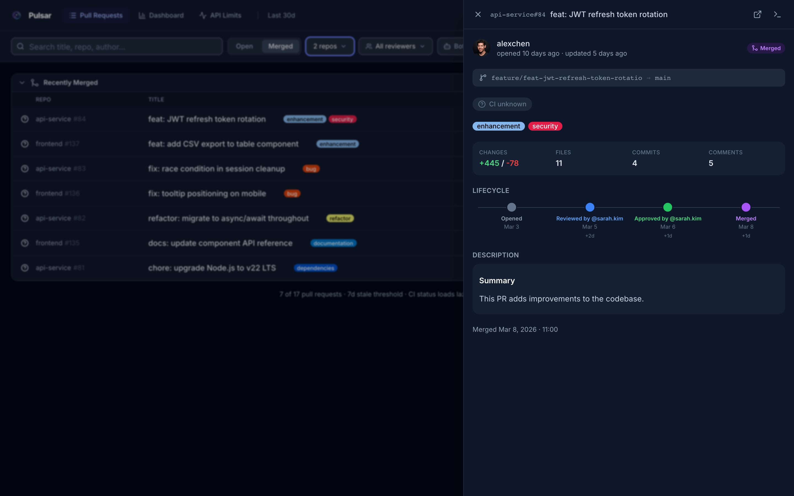
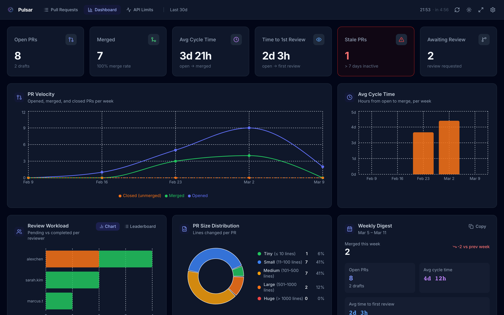
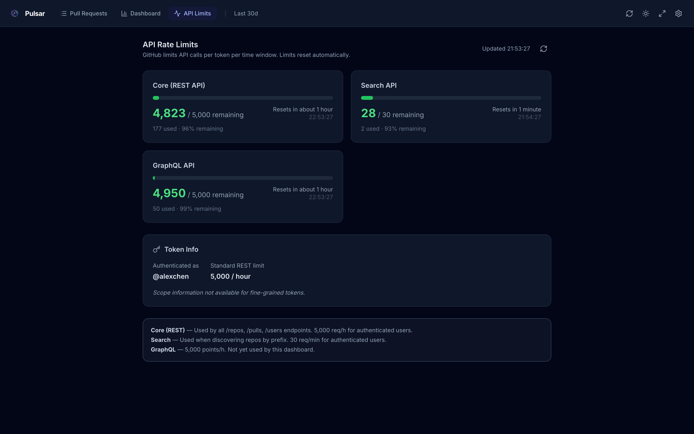
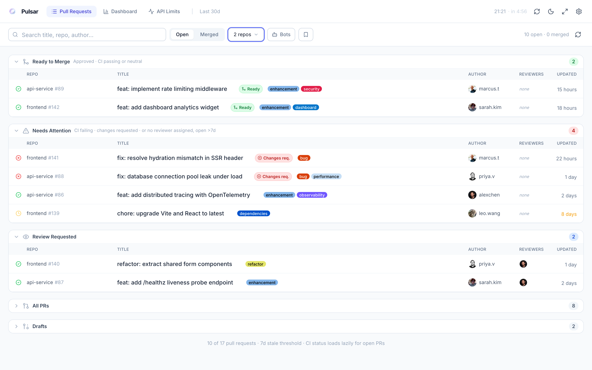
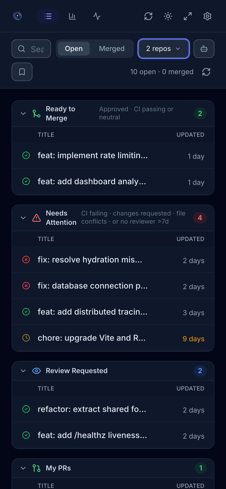
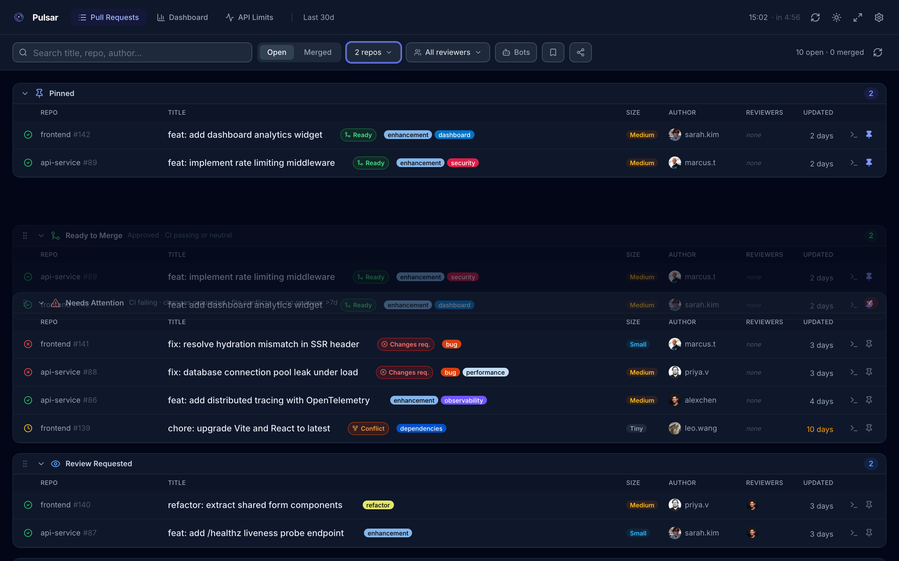
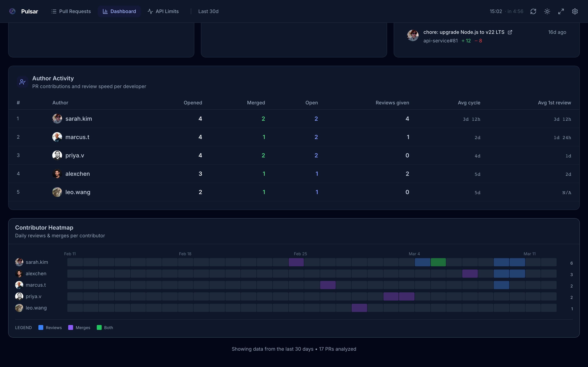
No server to deploy. No data to sync. Paste a GitHub token and you're good.
repo and read:org scopes. It never leaves your browser.
Pulsar runs entirely client-side. Your GitHub PAT, repository data, and PR history are stored only in your browser's localStorage. No servers, no databases, no third-party data collection. Anonymous analytics are opt-in only.
No account required. Open the app, paste your GitHub token, and you're in.